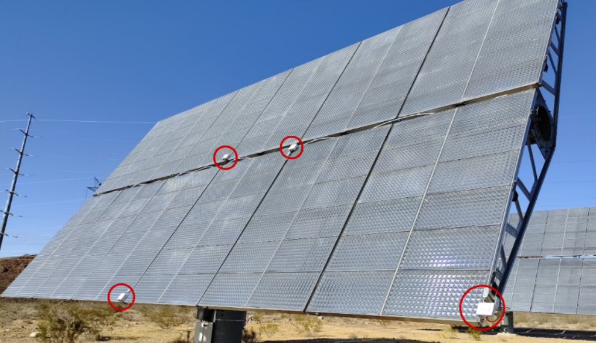
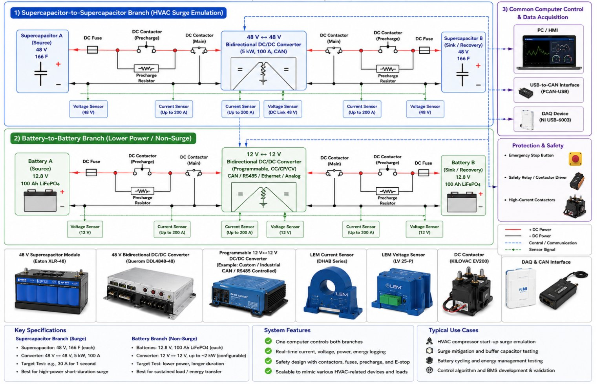
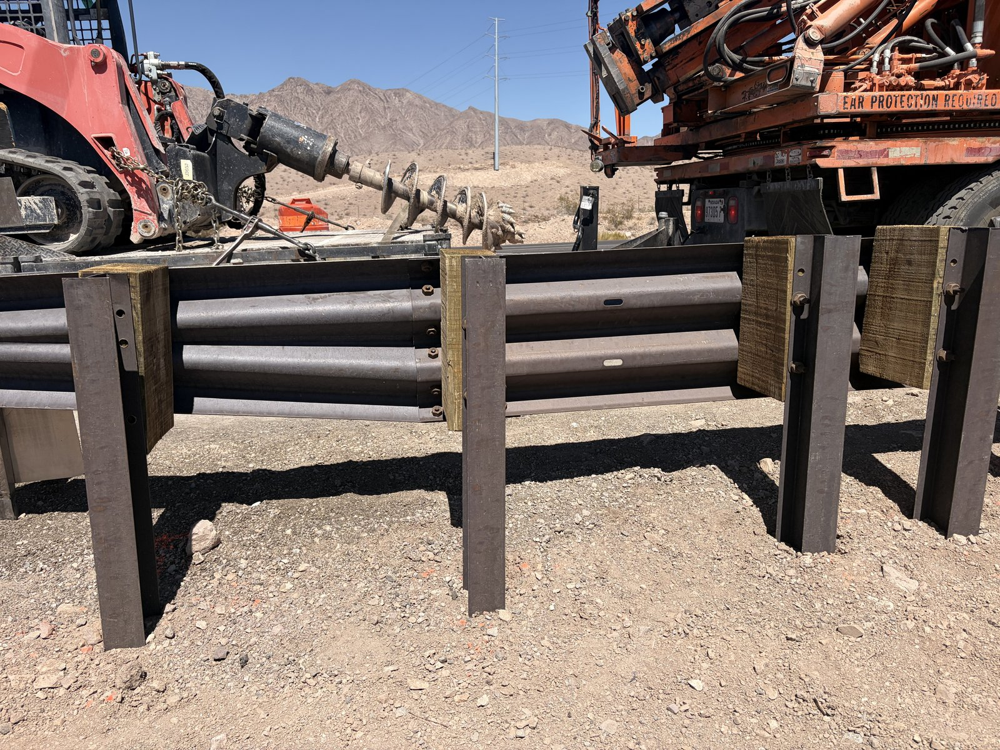
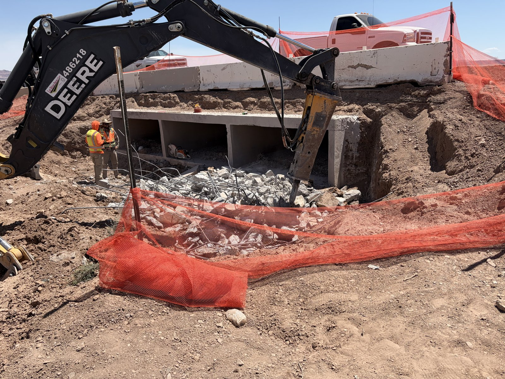
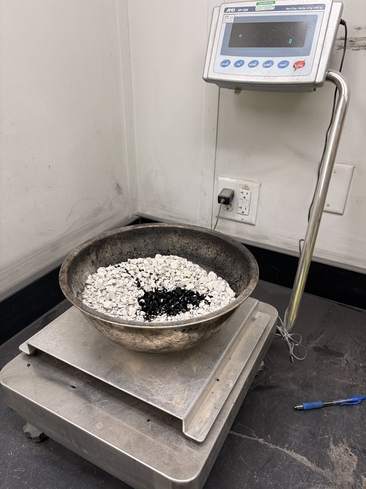
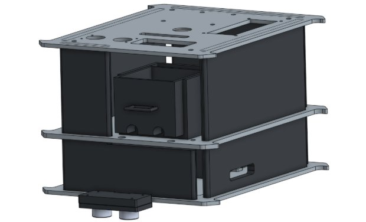
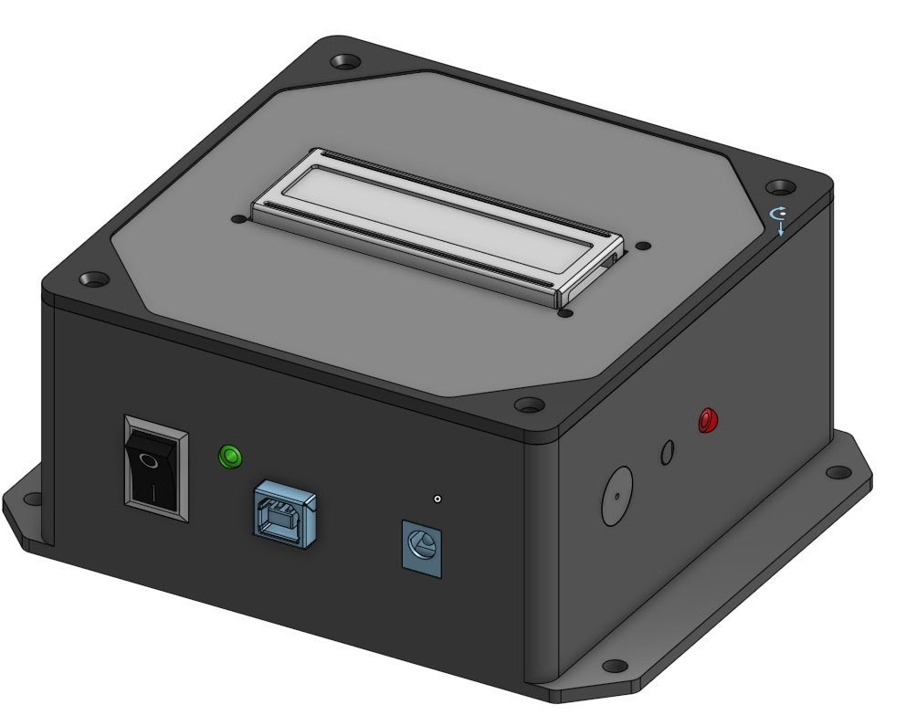
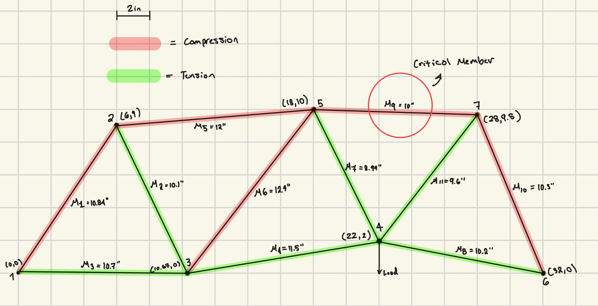
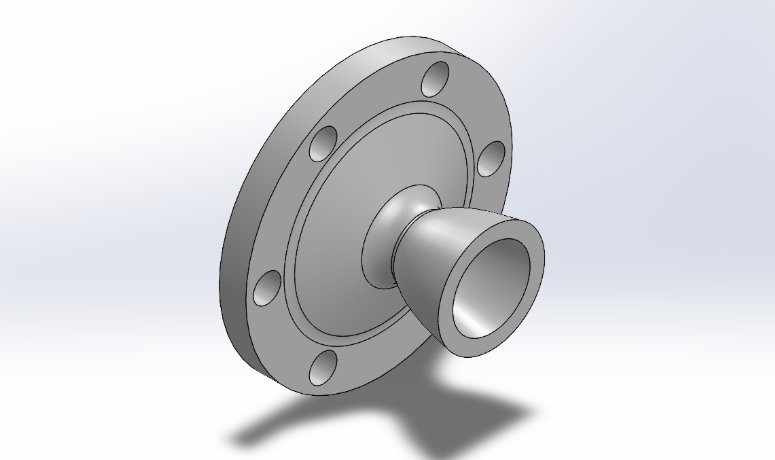
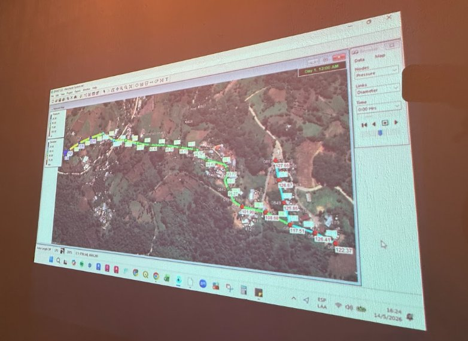

Independent and faculty-advised research work.

A low-cost sensor that measures heliostat mirror angles for utility-scale solar fields.

A lab-scale battery-supercapacitor platform for testing building energy strategies at lower cost.
Internship work on NDoT's Searchlight U.S. 95 Roadway Rehabilitation.

QA inspections of guard and barrier rail replacement along U.S. 95 in Clark County.

QA inspections of a culvert headwall rebuilt to control stormwater and stabilize terrain.

Tortoise fencing QA and 13 culverts converted into wildlife crossings across 36 miles of U.S. 95.
Coursework-driven and capstone-style projects from the mechanical engineering curriculum.

A hands-free robot that clears debris from a 4×4 ft desk in under two minutes.

A handheld, low-power temperature monitor with a display and adjustable alarm.

An acrylic truss designed for maximum load within tight size and material limits.

A bell nozzle designed and stress-tested for operation at 10,000 ft.

Clean water systems bringing in-home water to 400+ residents in Honduras and Guatemala.